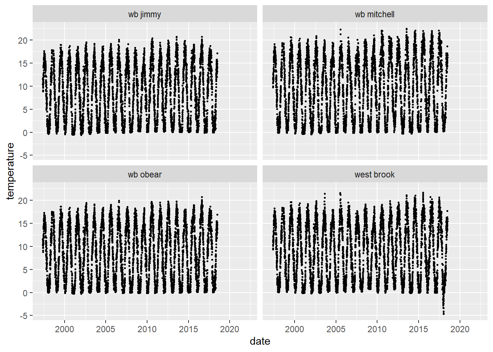

Chapter 3 Models
List of models will go here
3.1 Young-of-year size model
The question here is what is driving body size variation across years in brook trout and brown trout in the WB?
We focus on ageInSamples == 1 (age-0 fish in the fall sample) fish for growth model. This is the first sampling occasion that most fish are big enough to tag. Not all fish are big enough, however, and there is a number of untagged fish each year. We need to include both tagged and untagged fish in our age-0 size model.
Factors to include in the model are
1. Sample date
2. Cumulative temperature prior to sampling
3. Cumulative flow prior to sampling
4. Extreme flow events?? Floods, droughts?
5. Fish density, age-0 counts across all three salmonids
3.1.1 Raw data for YOY model
- Environmental data (flow, temperature) are from 1, 3, or 5 months prior to date of individual capture. Also can used fixed dates: assumed spawning dates, assumed emergence dates and actual observation (sample) dates.
- All fish data are from age-0 in autumn.
- Abundance data.
3.1.2 Get environmental data
getNew_envDataWB <- FALSEWest Brook environmental data (flow and temperature)
if(getNew_envDataWB) {
reconnect()
envDataWB <- tbl(conDplyr, "data_daily_temperature") %>%
collect(n = Inf) %>%
full_join(tbl(conDplyr, "data_flow_extension") %>%
collect(n = Inf), by = c("river", "date")) %>%
select(-source) %>%
rename(temperature = daily_mean_temp, flow = qPredicted) %>%
mutate(dateDate = as_date(date))
save(envDataWB, file = './data/envDataWB.RData')
} else {
load(file = './data/envDataWB.RData')
}
str(envDataWB)## tibble [32,189 x 7] (S3: tbl_df/tbl/data.frame)
## $ river : chr [1:32189] "wb jimmy" "wb jimmy" "wb jimmy" "wb jimmy" ...
## $ date : POSIXct[1:32189], format: "1997-05-14" "1997-05-15" "1997-05-16" "1997-05-17" ...
## $ temperature : num [1:32189] 11.57 10.4 10.55 8.84 9.09 ...
## $ daily_max_temp: num [1:32189] 11.6 12.3 11.9 10.2 11.6 ...
## $ daily_min_temp: num [1:32189] 11.57 8.96 9.73 7.74 7.45 ...
## $ flow : num [1:32189] NA NA NA NA NA NA NA NA NA NA ...
## $ dateDate : Date[1:32189], format: "1997-05-14" "1997-05-15" "1997-05-16" "1997-05-17" ...ggplot(envDataWB, aes(date, flow)) +
geom_point() +
facet_wrap(~river)
ggplot(envDataWB, aes(date, temperature)) +
geom_point(size = 0.5) +
facet_wrap(~river)
3.1.3 Get first observations
- Filter cdWB_electro for first observations in the autumn for age-0 fish (ageInsamples == 0). Including both tagged and untagged fish.
selectedVariables <- c("tag", "species", "river", "detectionDate", "sampleNumber", "n", "proportionSampled", "observedLength", "observedWeight", "area", "season", "isYOY")
firstObs_noTag <- cdWB_electro %>%
filter(is.na(tag), ageInSamples == 1) %>%
mutate(n = 1) %>%
dplyr:: select(all_of(selectedVariables))
firstObs_tag <- cdWB_electro %>%
group_by(tag) %>%
mutate(isFirstObs = detectionDate == min(detectionDate),
n = n()) %>%
filter(isFirstObs, ageInSamples == 1) %>%
dplyr::select(all_of(selectedVariables)) %>%
ungroup()
firstObs0 <- add_row(firstObs_tag, firstObs_noTag) %>%
mutate(date = as_date(detectionDate),
yday = yday(date))For each date in firstObs0 that at least one fish was captured, calculate summary stats for flow and temperature for different time periods:
1. Assumed spawning to capture
2. Assumed spawning to assumed emergence
3. Assumed emergence to capture
4. One month preceding capture
5. Three months preceding capture
5. Five months preceding capture
Then merge results with firstObs0 to create firstObs.
spawn_month <- "11" # spawning
spawn_day <- "15"
emerge_month <- "03" # emergence
emerge_day <- "01"
firstObsDates <- firstObs0 %>% distinct(date = date(detectionDate), river)
# move to getPrepareWBData
getEnvMeans <- function(riverIn, start, end) {
out <- envDataWB %>%
filter(river == riverIn, dateDate >= start, dateDate <= end) %>%
summarize(
sumT = sum(temperature, na.rm = TRUE),
meanT = mean(temperature, na.rm = TRUE),
sdT = sd(temperature, na.rm = TRUE),
cvT = sdT/meanT,
sumF = sum(flow, na.rm = TRUE),
meanF = mean(flow, na.rm = TRUE),
sdF = sd(flow, na.rm = TRUE),
cvF = sdF/meanF,
n = n()
)
#message(paste(river, start, end,tag))
return(out)
}
firstObs_Env <- firstObsDates %>%
rowwise() %>%
mutate(
year = year(date),
spawnDate = ymd(paste0(year,spawn_month,spawn_day)) - years(1),
emergeDate = ymd(paste0(year,emerge_month,emerge_day)),
oneMonthDate = date - days(as.integer(1 * 30.5)), #months(1), 'months gives error when prev month has 30 days and current has 31
threeMonthDate = date - days(as.integer(3 * 30.5)),
fiveMonthDate = date - days(as.integer(5 * 30.5)),
spawn_emerge = list(getEnvMeans(river, spawnDate, emergeDate)),
emerge_detect = list(getEnvMeans(river, emergeDate, date)),
spawn_detect = list(getEnvMeans(river, spawnDate, date)),
oneMonth = list(getEnvMeans(river, oneMonthDate, date)),
threeMonth = list(getEnvMeans(river, threeMonthDate, date)),
fiveMonth = list(getEnvMeans(river, fiveMonthDate, date))
)
# merge env data into firstObs0
firstObs <- firstObs0 %>%
left_join(firstObs_Env)
#str(firstObs)Unnest firstObs so environmental summary stats are available as data frame with the name of the time interval as the prefix to the statisticVariable name
getScaled <- function(d){
(d - mean(d, na.rm = TRUE)) / sd(d, na.rm = TRUE)
}
firstObsUnnested <- firstObs %>%
unnest(cols = c(spawn_emerge, emerge_detect, spawn_detect, oneMonth, threeMonth, fiveMonth), names_sep = "_") %>%
mutate(
emerge_detect_sumTScaled = getScaled(emerge_detect_sumT),
emerge_detect_sumFScaled = getScaled(emerge_detect_sumF),
oneMonth_sumTScaled = getScaled(oneMonth_sumT),
oneMonth_sumFScaled = getScaled(oneMonth_sumF),
threeMonth_sumTScaled = getScaled(threeMonth_sumT),
threeMonth_sumFScaled = getScaled(threeMonth_sumF),
fiveMonth_sumTScaled = getScaled(fiveMonth_sumT),
fiveMonth_sumFScaled = getScaled(fiveMonth_sumF),
ydayScaled = getScaled(yday)
)
str(firstObsUnnested)## tibble [20,783 x 83] (S3: tbl_df/tbl/data.frame)
## $ tag : chr [1:20783] "00088cbed7" "00088cbed8" "00088cbedb" "00088cbedd" ...
## $ species : chr [1:20783] "bkt" "bnt" "bkt" "bkt" ...
## $ river : chr [1:20783] "wb obear" "west brook" "west brook" "wb obear" ...
## $ detectionDate : POSIXct[1:20783], format: "2014-09-17 00:00:00" "2012-09-26 11:01:00" "2014-09-24 11:45:00" "2012-09-21 00:00:00" ...
## $ sampleNumber : num [1:20783] 79 71 79 71 79 71 71 79 71 79 ...
## $ n : num [1:20783] 2 3 1 3 1 1 4 2 1 1 ...
## $ proportionSampled : num [1:20783] 1 1 1 1 1 1 1 1 1 1 ...
## $ observedLength : num [1:20783] 70 86 89 61 60 64 70 62 87 73 ...
## $ observedWeight : num [1:20783] 3.5 6.7 8.3 2.4 2.4 2.8 4.6 2.3 7.5 4.2 ...
## $ area : chr [1:20783] "trib" "inside" "inside" "trib" ...
## $ season : num [1:20783] 3 3 3 3 3 3 3 3 3 3 ...
## $ isYOY : logi [1:20783] TRUE TRUE TRUE TRUE TRUE TRUE ...
## $ date : Date[1:20783], format: "2014-09-17" "2012-09-26" "2014-09-24" "2012-09-21" ...
## $ yday : num [1:20783] 260 270 267 265 269 270 264 260 270 258 ...
## $ year : num [1:20783] 2014 2012 2014 2012 2014 ...
## $ spawnDate : Date[1:20783], format: "2013-11-15" "2011-11-15" "2013-11-15" "2011-11-15" ...
## $ emergeDate : Date[1:20783], format: "2014-03-01" "2012-03-01" "2014-03-01" "2012-03-01" ...
## $ oneMonthDate : Date[1:20783], format: "2014-08-18" "2012-08-27" "2014-08-25" "2012-08-22" ...
## $ threeMonthDate : Date[1:20783], format: "2014-06-18" "2012-06-27" "2014-06-25" "2012-06-22" ...
## $ fiveMonthDate : Date[1:20783], format: "2014-04-18" "2012-04-27" "2014-04-25" "2012-04-22" ...
## $ spawn_emerge_sumT : num [1:20783] 110 358 131 313 131 ...
## $ spawn_emerge_meanT : num [1:20783] 1.03 3.32 1.22 2.9 1.22 ...
## $ spawn_emerge_sdT : num [1:20783] 1.36 2.3 1.56 2.43 1.56 ...
## $ spawn_emerge_cvT : num [1:20783] 1.321 0.695 1.274 0.838 1.274 ...
## $ spawn_emerge_sumF : num [1:20783] 0 48.7 25.7 0 25.7 ...
## $ spawn_emerge_meanF : num [1:20783] NaN 0.451 0.24 NaN 0.24 ...
## $ spawn_emerge_sdF : num [1:20783] NA 0.457 0.352 NA 0.352 ...
## $ spawn_emerge_cvF : num [1:20783] NA 1.01 1.47 NA 1.47 ...
## $ spawn_emerge_n : int [1:20783] 107 108 107 108 107 108 108 107 108 107 ...
## $ emerge_detect_sumT : num [1:20783] 2191 2791 2597 2602 2622 ...
## $ emerge_detect_meanT : num [1:20783] 10.9 13.3 12.5 12.7 12.5 ...
## $ emerge_detect_sdT : num [1:20783] 5.74 4.82 6.36 5 6.33 ...
## $ emerge_detect_cvT : num [1:20783] 0.527 0.362 0.51 0.394 0.507 ...
## $ emerge_detect_sumF : num [1:20783] 0 28.6 71.6 0 71.6 ...
## $ emerge_detect_meanF : num [1:20783] NaN 0.136 0.344 NaN 0.341 ...
## $ emerge_detect_sdF : num [1:20783] NA 0.246 0.533 NA 0.532 ...
## $ emerge_detect_cvF : num [1:20783] NA 1.81 1.55 NA 1.56 ...
## $ emerge_detect_n : int [1:20783] 201 210 208 205 210 210 204 201 210 199 ...
## $ spawn_detect_sumT : num [1:20783] 2301 3149 2728 2915 2753 ...
## $ spawn_detect_meanT : num [1:20783] 7.5 9.93 8.69 9.34 8.71 ...
## $ spawn_detect_sdT : num [1:20783] 6.65 6.27 7.48 6.32 7.46 ...
## $ spawn_detect_cvT : num [1:20783] 0.887 0.631 0.861 0.677 0.857 ...
## $ spawn_detect_sumF : num [1:20783] 0 77.1 97.2 0 97.2 ...
## $ spawn_detect_meanF : num [1:20783] NaN 0.243 0.31 NaN 0.307 ...
## $ spawn_detect_sdF : num [1:20783] NA 0.365 0.482 NA 0.481 ...
## $ spawn_detect_cvF : num [1:20783] NA 1.5 1.56 NA 1.57 ...
## $ spawn_detect_n : int [1:20783] 307 317 314 312 316 317 311 307 317 305 ...
## $ oneMonth_sumT : num [1:20783] 470 461 454 489 445 ...
## $ oneMonth_meanT : num [1:20783] 15.2 14.9 14.6 15.8 14.4 ...
## $ oneMonth_sdT : num [1:20783] 1.69 1.89 2.45 1.7 2.44 ...
## $ oneMonth_cvT : num [1:20783] 0.112 0.127 0.167 0.108 0.17 ...
## $ oneMonth_sumF : num [1:20783] 0 2.1101 -0.0766 0 -0.2195 ...
## $ oneMonth_meanF : num [1:20783] NaN 0.06807 -0.00247 NaN -0.00708 ...
## $ oneMonth_sdF : num [1:20783] NA 0.3031 0.0204 NA 0.0176 ...
## $ oneMonth_cvF : num [1:20783] NA 4.45 -8.24 NA -2.48 ...
## $ oneMonth_n : int [1:20783] 31 31 31 31 31 31 31 31 31 31 ...
## $ threeMonth_sumT : num [1:20783] 1445 1523 1571 1559 1561 ...
## $ threeMonth_meanT : num [1:20783] 15.7 16.6 17.1 16.9 17 ...
## $ threeMonth_sdT : num [1:20783] 1.35 1.8 2.5 1.59 2.59 ...
## $ threeMonth_cvT : num [1:20783] 0.0859 0.1085 0.1463 0.0936 0.1526 ...
## $ threeMonth_sumF : num [1:20783] 0 1.17 12.25 0 11.8 ...
## $ threeMonth_meanF : num [1:20783] NaN 0.0127 0.1331 NaN 0.1283 ...
## $ threeMonth_sdF : num [1:20783] NA 0.184 0.298 NA 0.298 ...
## $ threeMonth_cvF : num [1:20783] NA 14.52 2.24 NA 2.32 ...
## $ threeMonth_n : int [1:20783] 92 92 92 92 92 92 92 92 92 92 ...
## $ fiveMonth_sumT : num [1:20783] 2086 2400 2425 2281 2432 ...
## $ fiveMonth_meanT : num [1:20783] 13.6 15.7 15.8 14.9 15.9 ...
## $ fiveMonth_sdT : num [1:20783] 3.16 2.54 3.07 3.2 2.98 ...
## $ fiveMonth_cvT : num [1:20783] 0.232 0.162 0.194 0.215 0.188 ...
## $ fiveMonth_sumF : num [1:20783] 0 16.9 39.3 0 38.3 ...
## $ fiveMonth_meanF : num [1:20783] NaN 0.111 0.257 NaN 0.251 ...
## $ fiveMonth_sdF : num [1:20783] NA 0.246 0.427 NA 0.427 ...
## $ fiveMonth_cvF : num [1:20783] NA 2.23 1.66 NA 1.7 ...
## $ fiveMonth_n : int [1:20783] 153 153 153 153 153 153 153 153 153 153 ...
## $ emerge_detect_sumTScaled: num [1:20783] -0.261 1.215 0.738 0.751 0.799 ...
## $ emerge_detect_sumFScaled: num [1:20783] -1.346 -0.518 0.727 -1.346 0.725 ...
## $ oneMonth_sumTScaled : num [1:20783] 0.3199 0.1864 0.085 0.5805 -0.0332 ...
## $ oneMonth_sumFScaled : num [1:20783] -0.329 0.206 -0.348 -0.329 -0.384 ...
## $ threeMonth_sumTScaled : num [1:20783] 0.275 0.523 0.676 0.638 0.644 ...
## $ threeMonth_sumFScaled : num [1:20783] -0.798 -0.671 0.536 -0.798 0.488 ...
## $ fiveMonth_sumTScaled : num [1:20783] -0.0187 0.8552 0.9245 0.5252 0.9456 ...
## $ fiveMonth_sumFScaled : num [1:20783] -1.261 -0.376 0.796 -1.261 0.745 ...
## $ ydayScaled : num [1:20783] -0.6678 0.3131 0.0189 -0.1773 0.215 ...#ggplot(firstObsUnnested, aes(oneMonth_sumTScaled, fiveMonth_sumTScaled)) +
# geom_point() +
# facet_wrap(~river)3.1.4 Counts of captured fish
Min and max years (inclusive) for standardizing counts
minYear <- 2000
maxYear <- 2015Counts by river and species
countsRSY <- firstObs %>%
filter(year %in% minYear:maxYear) %>%
group_by(river, species, year) %>%
summarize(
count = n(),
meanPropSampled = mean(proportionSampled, na.rm = TRUE)
) %>%
mutate(countAdj = count / meanPropSampled) %>%
ungroup() %>%
group_by(river, species) %>%
mutate(meanCountRS = mean(count, na.rm = TRUE),
sdCountRS = sd(count, na.rm = TRUE),
countRS_Scaled = (count - meanCountRS) / sdCountRS) %>%
ungroup()
ggplot(countsRSY, aes(year, countRS_Scaled, color = species)) +
geom_point() +
geom_line() +
facet_wrap(~ river)
Counts by river
countsRY <- firstObs %>%
filter(year %in% minYear:maxYear) %>%
group_by(river, year) %>%
summarize(
count = n(),
meanPropSampled = mean(proportionSampled, na.rm = TRUE)
) %>%
mutate(countAdj = count / meanPropSampled) %>%
ungroup() %>%
group_by(river) %>%
mutate(meanCountR = mean(count, na.rm = TRUE),
sdCountR = sd(count, na.rm = TRUE),
countR_Scaled = (count - meanCountR) / sdCountR) %>%
ungroup()
ggplot(countsRY, aes(year, countR_Scaled, color = river)) +
geom_point() +
geom_line()
Counts for the metaPopulation (WB, Jimmy, Mitchell)
Use these for modelling.
countsMetaY <- firstObs %>%
filter(river != "wb obear", year %in% minYear:maxYear) %>%
group_by(year) %>%
summarize(
count = n(),
meanPropSampled = mean(proportionSampled, na.rm = TRUE)
) %>%
mutate(countAdj = count / meanPropSampled) %>%
ungroup() %>%
mutate(meanCount = mean(count, na.rm = TRUE),
sdCount = sd(count, na.rm = TRUE),
count_Scaled = (count - meanCount) / sdCount)
# missing data for tribs in 2000, 2001 - may skew scaled count a bit low - should fix
ggplot(countsMetaY, aes(year, count_Scaled)) +
geom_point() +
geom_line()
Merge metapopulation scaled counts into firstObsUnnested
firstObsUnnested <- firstObsUnnested %>%
left_join(countsMetaY %>% dplyr::select(year, count_Scaled))
firstObsUnnestedWB <- firstObsUnnested %>% filter(river == "west brook")3.1.5 Raw data plots
3.1.5.2 Brook Trout, West brook
#cd1 <- cdWB_electro %>% filter(ageInSamples == 1, species != 'ats')
plotSppRiv = function(s, r) {
ggplot(firstObs %>% filter(species == s, river == r), aes(observedLength, color = is.na(tag))) +
geom_freqpoly() +
geom_vline(xintercept = 60) +
ggtitle(paste(s, r, sep = ', ')) +
xlim(c(30,125)) +
facet_wrap(~ year, scales = "free_y")
}
species = 'bkt'
riverOrdered = "west brook"
plotSppRiv(species, riverOrdered)


3.1.5.10 Trout, in the WB mainstem only
ggplot(firstObs %>% filter(species != "ats"), aes(observedLength)) +
geom_freqpoly() +
geom_vline(xintercept = 60, color = 'orange') +
facet_grid(species ~ year)
ggplot(firstObs %>% filter(species != "ats"), aes(observedLength, color = is.na(tag))) +
geom_freqpoly() +
geom_vline(xintercept = 60, color = 'orange') +
facet_grid(species ~ year)
3.1.5.11 Why are there untagged fish bigger than 60mm?
Check 2002/bkt/WB, as an example
firstObs2002BKT <- firstObs %>% filter(year == 2002, species == "bkt")
table(is.na(firstObs2002BKT$tag))##
## FALSE TRUE
## 295 253 ggplot(firstObs2002BKT, aes(observedLength, color = is.na(tag))) +
geom_freqpoly() +
geom_vline(xintercept = 60)
# looks like untagged area=inside fish wee morts, the rest were above or below
ggplot(firstObs2002BKT, aes(observedLength, color = is.na(tag))) +
geom_freqpoly() +
geom_vline(xintercept = 60) +
facet_grid(~area)
# check 2003
ggplot(firstObs %>% filter(year == 2003, species == "bkt"), aes(observedLength, color = is.na(tag))) +
geom_freqpoly() +
geom_vline(xintercept = 60) +
facet_grid(~area)
# same story as 20023.1.5.12 Why no untagged fish at all for 2000 and 2001?
cfirstObs2000_2001BKT <- firstObs %>% filter(year %in% 2000:2001, species == "bkt")
table(is.na(cfirstObs2000_2001BKT$tag))##
## FALSE
## 343 table(cfirstObs2000_2001BKT$observedLength)##
## 57 58 59 60 61 62 63 64 65 66 67 68 69 70 71 72 73 74 75 76 77 78 79 80 85 90
## 18 23 23 26 20 28 19 14 28 23 20 21 9 14 8 11 3 8 4 5 6 5 1 3 2 1 cfirstObs2000_2001BKT %>% filter(observedLength < 60)## # A tibble: 64 x 26
## tag species river detectionDate sampleNumber n proportionSampl~ observedLength observedWeight area season
## <chr> <chr> <chr> <dttm> <dbl> <dbl> <dbl> <dbl> <dbl> <chr> <dbl>
## 1 1bf0fc3~ bkt west~ 2001-09-10 12:00:00 27 2 1 58 1.9 insi~ 3
## 2 1bf0fc4~ bkt west~ 2001-09-07 12:00:00 27 2 1 57 1.9 insi~ 3
## 3 1bf0fe5~ bkt west~ 2001-09-07 12:00:00 27 1 1 59 2.1 insi~ 3
## 4 1bf0fe7~ bkt west~ 2001-09-07 12:00:00 27 6 1 59 2.1 insi~ 3
## 5 1bf0fe8~ bkt west~ 2001-09-06 12:00:00 27 1 1 59 2.2 insi~ 3
## 6 1bf0fe8~ bkt west~ 2001-09-10 12:00:00 27 1 1 57 1.9 insi~ 3
## 7 1bf0fe8~ bkt west~ 2001-09-07 12:00:00 27 3 1 58 2 insi~ 3
## 8 1bf0fe8~ bkt west~ 2001-09-10 12:00:00 27 2 1 58 2.1 insi~ 3
## 9 1bf0fe8~ bkt west~ 2001-09-06 12:00:00 27 4 1 58 2 insi~ 3
## 10 1bf0fe9~ bkt west~ 2001-09-07 12:00:00 27 3 1 58 1.8 insi~ 3
## # ... with 54 more rows, and 15 more variables: isYOY <lgl>, date <date>, yday <dbl>, year <dbl>, spawnDate <date>,
## # emergeDate <date>, oneMonthDate <date>, threeMonthDate <date>, fiveMonthDate <date>, spawn_emerge <list>,
## # emerge_detect <list>, spawn_detect <list>, oneMonth <list>, threeMonth <list>, fiveMonth <list> ggplot(cfirstObs2000_2001BKT, aes(observedLength, color = is.na(tag))) +
geom_freqpoly() +
geom_vline(xintercept = 60)
3.1.6 Models based on yearly means
Filter firstObsUnnestedWB for bkt, bnt and min/maxYear
d_WB_BKT_BNT <- firstObsUnnestedWB %>% filter(species != "ats", year %in% minYear:maxYear) %>%
mutate(species01 = ifelse(species == "bkt", 1, 0))
hist(d_WB_BKT_BNT$detectionDate, breaks = 250)
Mean model functions
getMeansData <- function(d, t, f) {
means <- d %>%
group_by(species, year) %>%
summarize(meanLength = mean(observedLength, na.rm = TRUE),
meanEmerge_detect_sumTScaled = mean(emerge_detect_sumTScaled, na.rm = TRUE),
meanEmerge_detect_sumFScaled = mean(emerge_detect_sumTScaled, na.rm = TRUE),
meanTTime_sumTScaled = mean(get(t), na.rm = TRUE),
meanFTime_sumFScaled = mean(get(f), na.rm = TRUE),
meanYdayScaled = mean(ydayScaled, na.rm = TRUE),
meanCount_Scaled = mean(count_Scaled, na.rm = TRUE)
)
return(means)
}
plotMeans <- function(means){
out <- list()
out[[1]] <- ggplot(means, aes(year, meanLength, color = species)) +
geom_point() +
geom_line()
out[[2]] <- ggplot(means, aes(meanTTime_sumTScaled, meanLength, color = species)) +
geom_point() +
geom_smooth(method = "lm", se = FALSE)
out[[3]] <- ggplot(means, aes(meanFTime_sumFScaled, meanLength, color = species)) +
geom_point() +
geom_smooth(method = "lm", se = FALSE)
out[[4]] <- ggplot(means, aes(meanYdayScaled, meanLength, color = species)) +
geom_point() +
geom_smooth(method = "lm", se = FALSE)
out[[5]] <- ggplot(means, aes(meanCount_Scaled, meanLength, color = species)) +
geom_point() +
geom_smooth(method = "lm", se = FALSE)
out[[5]] <- ggplot(means, aes(meanTTime_sumTScaled, meanFTime_sumFScaled, color = species)) +
geom_point() +
geom_smooth(method = "lm", se = FALSE)
return(out)
}
runMeanModels <- function(means) {
modLMMeans1 <- lm(meanLength ~ (factor(species) + meanFTime_sumFScaled + meanTTime_sumTScaled + meanYdayScaled + meanCount_Scaled), data = means)
modLMMeans2 <- lm(meanLength ~ (factor(species) + meanFTime_sumFScaled + meanTTime_sumTScaled + meanYdayScaled + meanCount_Scaled)^2, data = means)
modLMMeans3 <- lm(meanLength ~ (factor(species) + meanFTime_sumFScaled + meanTTime_sumTScaled + meanYdayScaled + meanCount_Scaled)^3, data = means)
return(list(modLMMeans1,modLMMeans2,modLMMeans3))
}3.1.6.1 Flow and temperature from previous one month
means1 <- getMeansData(d_WB_BKT_BNT, "oneMonth_sumTScaled", "oneMonth_sumFScaled")
plotMeans(means1)## [[1]]
##
## [[2]]
##
## [[3]]
##
## [[4]]
##
## [[5]]
mod1 <- runMeanModels(means1)
AIC(mod1[[1]], mod1[[2]], mod1[[3]]) %>% arrange(AIC)## df AIC
## mod1[[2]] 17 176.2075
## mod1[[3]] 27 181.7035
## mod1[[1]] 7 181.8187summary(mod1[[1]])##
## Call:
## lm(formula = meanLength ~ (factor(species) + meanFTime_sumFScaled +
## meanTTime_sumTScaled + meanYdayScaled + meanCount_Scaled),
## data = means)
##
## Residuals:
## Min 1Q Median 3Q Max
## -6.2779 -1.9839 -0.8754 1.0981 10.5908
##
## Coefficients:
## Estimate Std. Error t value Pr(>|t|)
## (Intercept) 72.4359 1.0722 67.558 < 2e-16 ***
## factor(species)bnt 0.6550 1.3128 0.499 0.622039
## meanFTime_sumFScaled 1.6769 0.3849 4.356 0.000184 ***
## meanTTime_sumTScaled -10.3842 2.3734 -4.375 0.000175 ***
## meanYdayScaled -3.4856 1.7314 -2.013 0.054554 .
## meanCount_Scaled -2.5187 0.7068 -3.564 0.001443 **
## ---
## Signif. codes: 0 '***' 0.001 '**' 0.01 '*' 0.05 '.' 0.1 ' ' 1
##
## Residual standard error: 3.695 on 26 degrees of freedom
## Multiple R-squared: 0.6966, Adjusted R-squared: 0.6383
## F-statistic: 11.94 on 5 and 26 DF, p-value: 4.544e-06rI1 <- relaimpo::calc.relimp(mod1[[1]])
save(means1, mod1, file = "models/mod1LMMeans.Rdata")3.1.6.2 Flow and temperature from previous three months
means3 <- getMeansData(d_WB_BKT_BNT, "threeMonth_sumTScaled", "threeMonth_sumFScaled")
plotMeans(means3)## [[1]]
##
## [[2]]
##
## [[3]]
##
## [[4]]
##
## [[5]]
mod3 <- runMeanModels(means3)
AIC(mod3[[1]], mod3[[2]], mod3[[3]]) %>% arrange(AIC)## df AIC
## mod3[[3]] 27 177.0683
## mod3[[2]] 17 181.7547
## mod3[[1]] 7 187.3979summary(mod3[[1]])##
## Call:
## lm(formula = meanLength ~ (factor(species) + meanFTime_sumFScaled +
## meanTTime_sumTScaled + meanYdayScaled + meanCount_Scaled),
## data = means)
##
## Residuals:
## Min 1Q Median 3Q Max
## -6.3569 -2.8523 0.3445 1.8018 9.2951
##
## Coefficients:
## Estimate Std. Error t value Pr(>|t|)
## (Intercept) 73.4882 1.8809 39.070 < 2e-16 ***
## factor(species)bnt 0.8334 1.4312 0.582 0.565351
## meanFTime_sumFScaled 2.2450 0.5866 3.827 0.000732 ***
## meanTTime_sumTScaled -8.8499 3.6769 -2.407 0.023489 *
## meanYdayScaled 0.7120 1.4287 0.498 0.622411
## meanCount_Scaled -3.1604 0.7937 -3.982 0.000490 ***
## ---
## Signif. codes: 0 '***' 0.001 '**' 0.01 '*' 0.05 '.' 0.1 ' ' 1
##
## Residual standard error: 4.032 on 26 degrees of freedom
## Multiple R-squared: 0.6388, Adjusted R-squared: 0.5694
## F-statistic: 9.197 on 5 and 26 DF, p-value: 3.902e-05rI3 <- relaimpo::calc.relimp(mod3[[1]])
save(means3, mod3, file = "models/mod3LMMeans.Rdata")3.1.6.3 Flow and temperature from previous five months
means5 <- getMeansData(d_WB_BKT_BNT, "fiveMonth_sumTScaled", "fiveMonth_sumFScaled")
plotMeans(means5)## [[1]]
##
## [[2]]##
## [[3]]
##
## [[4]]
##
## [[5]]
mod5 <- runMeanModels(means5)
AIC(mod5[[1]], mod5[[2]], mod5[[3]]) %>% arrange(AIC)## df AIC
## mod5[[3]] 27 167.4034
## mod5[[1]] 7 193.2144
## mod5[[2]] 17 208.3847summary(mod5[[1]])##
## Call:
## lm(formula = meanLength ~ (factor(species) + meanFTime_sumFScaled +
## meanTTime_sumTScaled + meanYdayScaled + meanCount_Scaled),
## data = means)
##
## Residuals:
## Min 1Q Median 3Q Max
## -5.9186 -3.3732 0.3856 2.4470 11.8564
##
## Coefficients:
## Estimate Std. Error t value Pr(>|t|)
## (Intercept) 71.1144 1.9342 36.767 < 2e-16 ***
## factor(species)bnt 0.8911 1.5671 0.569 0.57450
## meanFTime_sumFScaled 2.6934 0.8705 3.094 0.00468 **
## meanTTime_sumTScaled -3.5748 2.9746 -1.202 0.24029
## meanYdayScaled 3.2403 1.5506 2.090 0.04657 *
## meanCount_Scaled -2.8957 0.8613 -3.362 0.00240 **
## ---
## Signif. codes: 0 '***' 0.001 '**' 0.01 '*' 0.05 '.' 0.1 ' ' 1
##
## Residual standard error: 4.415 on 26 degrees of freedom
## Multiple R-squared: 0.5668, Adjusted R-squared: 0.4835
## F-statistic: 6.805 on 5 and 26 DF, p-value: 0.0003537rI5 <- relaimpo::calc.relimp(mod5[[1]])
save(means5, mod5, file = "models/mod5LMMeans.Rdata")AICs and Relative importance of main effects models
AIC(mod1[[1]], mod1[[2]], mod1[[3]]) %>% arrange(AIC)## df AIC
## mod1[[2]] 17 176.2075
## mod1[[3]] 27 181.7035
## mod1[[1]] 7 181.8187AIC(mod3[[1]], mod3[[2]], mod3[[3]]) %>% arrange(AIC)## df AIC
## mod3[[3]] 27 177.0683
## mod3[[2]] 17 181.7547
## mod3[[1]] 7 187.3979AIC(mod5[[1]], mod5[[2]], mod5[[3]]) %>% arrange(AIC)## df AIC
## mod5[[3]] 27 167.4034
## mod5[[1]] 7 193.2144
## mod5[[2]] 17 208.3847rI1$lmg## factor(species) meanFTime_sumFScaled meanTTime_sumTScaled meanYdayScaled meanCount_Scaled
## 0.00395522 0.24940595 0.19990058 0.06280977 0.18053989rI3$lmg## factor(species) meanFTime_sumFScaled meanTTime_sumTScaled meanYdayScaled meanCount_Scaled
## 0.004325792 0.281631981 0.060776249 0.066333713 0.225756051rI5$lmg## factor(species) meanFTime_sumFScaled meanTTime_sumTScaled meanYdayScaled meanCount_Scaled
## 0.004330339 0.226812955 0.017322018 0.107186866 0.2111778263.1.7 Models based on individual observations
Probably not use these, too much individual variation
3.1.7.1 Are flow and temperature correlated for individual observations?
ggplot(firstObsUnnestedWB, aes(oneMonth_sumTScaled, oneMonth_sumFScaled)) +
geom_point(aes(color = (year))) +
geom_smooth(method = "lm") +
facet_wrap(~ species)
ggplot(firstObsUnnestedWB, aes(threeMonth_sumTScaled, threeMonth_sumFScaled)) +
geom_point(aes(color = (year))) +
geom_smooth(method = "lm") +
facet_wrap(~ species)
ggplot(firstObsUnnestedWB, aes(fiveMonth_sumTScaled, fiveMonth_sumFScaled)) +
geom_point(aes(color = (year))) +
geom_smooth(method = "lm") +
facet_wrap(~ species)# water getting warmer during a sample
ggplot(firstObsUnnestedWB, aes(fiveMonth_sumTScaled, fiveMonth_sumFScaled)) +
geom_point(aes(color = (yday))) +
geom_smooth(method = "lm") +
facet_wrap(~ species)
cor(firstObsUnnestedWB$oneMonth_sumTScaled, firstObsUnnestedWB$oneMonth_sumFScaled)## [1] -0.1778785cor(firstObsUnnestedWB$threeMonth_sumTScaled, firstObsUnnestedWB$threeMonth_sumFScaled)## [1] -0.01625096cor(firstObsUnnestedWB$fiveMonth_sumTScaled, firstObsUnnestedWB$fiveMonth_sumFScaled)## [1] -0.09445786# brook trout
firstObsUnnestedWB_BKT <- firstObsUnnestedWB %>% filter(species == "bkt")
cor(firstObsUnnestedWB_BKT$oneMonth_sumTScaled, firstObsUnnestedWB_BKT$oneMonth_sumFScaled)## [1] 0.05756251cor(firstObsUnnestedWB_BKT$threeMonth_sumTScaled, firstObsUnnestedWB_BKT$threeMonth_sumFScaled)## [1] -0.008944376cor(firstObsUnnestedWB_BKT$fiveMonth_sumTScaled, firstObsUnnestedWB_BKT$fiveMonth_sumFScaled)## [1] -0.1172725# brown trout
firstObsUnnestedWB_BNT <- firstObsUnnestedWB %>% filter(species == "bnt")
cor(firstObsUnnestedWB_BNT$oneMonth_sumTScaled, firstObsUnnestedWB_BNT$oneMonth_sumFScaled)## [1] 0.1403489cor(firstObsUnnestedWB_BNT$threeMonth_sumTScaled, firstObsUnnestedWB_BNT$threeMonth_sumFScaled)## [1] -0.103418cor(firstObsUnnestedWB_BNT$fiveMonth_sumTScaled, firstObsUnnestedWB_BNT$fiveMonth_sumFScaled)## [1] -0.009179518Assign the month interval (one, three, five) for flow and temperature variables. The variable will be accessed using e.g.get(tTime) in formulas and filters
tTime <- "threeMonth_sumTScaled"
fTime <- "threeMonth_sumFScaled" #"fiveMonth_sumFScaled"library(lme4)
library(relaimpo)
modLM1 <- lm(observedLength ~ (factor(species) * get(tTime) * get(fTime) * ydayScaled * count_Scaled), data = d_WB_BKT_BNT)
modLM2 <- lm(observedLength ~ (factor(species) + get(tTime) + get(fTime) + ydayScaled + count_Scaled), data = d_WB_BKT_BNT)
modLM3 <- lm(observedLength ~ (factor(species) + get(tTime) + get(fTime) + ydayScaled + count_Scaled)^2, data = d_WB_BKT_BNT)
modLM1a <- lm(observedLength ~ (factor(species)), data = d_WB_BKT_BNT)
modLM1b <- lm(observedLength ~ (factor(species) * get(tTime)), data = d_WB_BKT_BNT)
modLM1c <- lm(observedLength ~ (factor(species) * get(fTime)), data = d_WB_BKT_BNT)
modLM1d <- lm(observedLength ~ (factor(species) * ydayScaled), data = d_WB_BKT_BNT)
modLM1e <- lm(observedLength ~ (factor(species) * count_Scaled), data = d_WB_BKT_BNT)
AIC(modLM1, modLM2, modLM3, modLM1a, modLM1b, modLM1c, modLM1d, modLM1e) %>% arrange(AIC)## df AIC
## modLM1 33 61643.33
## modLM3 17 61807.67
## modLM2 7 62669.02
## modLM1c 5 63224.10
## modLM1e 5 63624.09
## modLM1d 5 63755.95
## modLM1b 5 63777.11
## modLM1a 3 63918.49#relaimpo::calc.relimp(modLM2) # slow for bigger models
# get 'boundary (singular)' error with model without 2-way interaction
#modLMER2 <- lmer(observedLength ~ (factor(species) + emerge_detect_sumTScaled + emerge_detect_sumFScaled + ydayScaled +count_Scaled)^2 + 1|year, data = d_WB_BKT_BNT)#https://gist.github.com/BERENZ/e9b581a4b7160357934e
calc.relip.mm <- function(model,type='lmg') {
if (!isLMM(model) & !isGLMM(model)) {
stop('Currently supports only lmer/glmer objects', call. = FALSE)
}
require(lme4)
X <- getME(model,'X')
X <- X[,-1]
Y <- getME(model,'y')
s_resid <- sigma(model)
s_effect <- getME(model,'theta')*s_resid
s2 <- sum(s_resid^2,s_effect^2)
V <- Diagonal(x = s2,n=nrow(X))
YX <- cbind(Y,X)
cov_XY <- solve( t(YX) %*% solve(V) %*% as.matrix(YX))
colnames(cov_XY) <- rownames(cov_XY) <- colnames(YX)
importances <- calc.relimp(as.matrix(cov_XY),rela=T,type=type)
return(importances)
}#modLMER1 <- lmer(observedLength ~ (factor(species) + get(tTime)|year + get(fTime)|year + ydayScaled|year + count_Scaled|year), data = d_WB_BKT_BNT)
modLMER1 <- lmer(observedLength ~ (factor(species) * get(tTime) * get(fTime) * ydayScaled * count_Scaled) + (1|year), data = d_WB_BKT_BNT)
modLMER2 <- lmer(observedLength ~ (factor(species) + get(tTime) + get(fTime) + ydayScaled + count_Scaled) + (1|year), data = d_WB_BKT_BNT)
modLMER3 <- lmer(observedLength ~ (factor(species) + get(tTime) + get(fTime) + ydayScaled + count_Scaled)^2 + (1|year), data = d_WB_BKT_BNT)
# one-by-one
modLMER1a <- lmer(observedLength ~ (factor(species)) + (1|year), data = d_WB_BKT_BNT)
modLMER1b <- lmer(observedLength ~ (factor(species) * get(tTime)) + (1|year), data = d_WB_BKT_BNT)
modLMER1c <- lmer(observedLength ~ (factor(species) * get(fTime)) + (1|year), data = d_WB_BKT_BNT)
modLMER1d <- lmer(observedLength ~ (factor(species) * ydayScaled) + (1|year), data = d_WB_BKT_BNT)
modLMER1e <- lmer(observedLength ~ (factor(species) * count_Scaled) + (1|year), data = d_WB_BKT_BNT)
AIC(modLMER1, modLMER2, modLMER3, modLMER1a, modLMER1b, modLMER1c, modLMER1d, modLMER1e) %>% arrange(AIC)## df AIC
## modLMER1 34 61236.76
## modLMER3 18 61411.21
## modLMER1d 6 61466.63
## modLMER2 8 61470.46
## modLMER1e 6 61471.21
## modLMER1c 6 61472.64
## modLMER1b 6 61473.34
## modLMER1a 4 61475.77calc.relip.mm(modLMER3)## Response variable: Y
## Total response variance: 3.893283e-05
##
## 15 Regressors:
## factor(species)bnt get(tTime) get(fTime) ydayScaled count_Scaled factor(species)bnt:get(tTime) factor(species)bnt:get(fTime) factor(species)bnt:ydayScaled factor(species)bnt:count_Scaled get(tTime):get(fTime) get(tTime):ydayScaled get(tTime):count_Scaled get(fTime):ydayScaled get(fTime):count_Scaled ydayScaled:count_Scaled
## Proportion of variance explained by model: 94.15%
## Metrics are normalized to sum to 100% (rela=TRUE).
##
## Relative importance metrics:
##
## lmg
## factor(species)bnt 0.097760307
## get(tTime) 0.419878608
## get(fTime) 0.092676088
## ydayScaled 0.033569860
## count_Scaled 0.078624107
## factor(species)bnt:get(tTime) 0.065441939
## factor(species)bnt:get(fTime) 0.012771321
## factor(species)bnt:ydayScaled 0.001781329
## factor(species)bnt:count_Scaled 0.019728183
## get(tTime):get(fTime) 0.071941193
## get(tTime):ydayScaled 0.029205652
## get(tTime):count_Scaled 0.041529196
## get(fTime):ydayScaled 0.011797805
## get(fTime):count_Scaled 0.012243731
## ydayScaled:count_Scaled 0.011050681
##
## Average coefficients for different model sizes:
##
## 1X 2Xs 3Xs 4Xs 5Xs 6Xs
## factor(species)bnt -0.0054984017 -0.0050704814 -0.0047545824 -0.0045389793 -0.0044124337 -4.364877e-03
## get(tTime) -0.0065705658 -0.0064807310 -0.0063924113 -0.0063084199 -0.0062305836 -6.159911e-03
## get(fTime) -0.0086478481 -0.0078930543 -0.0071804983 -0.0065359969 -0.0059811793 -5.531536e-03
## ydayScaled 0.0031793857 0.0027052187 0.0022831959 0.0019197886 0.0016131058 1.358765e-03
## count_Scaled -0.0083583700 -0.0078052106 -0.0072775852 -0.0068141491 -0.0064372666 -6.153114e-03
## factor(species)bnt:get(tTime) 0.0025119506 0.0020567879 0.0016471742 0.0012672530 0.0009056673 5.550952e-04
## factor(species)bnt:get(fTime) 0.0060183654 0.0047218822 0.0036288022 0.0027025061 0.0019065191 1.208199e-03
## factor(species)bnt:ydayScaled -0.0002196817 -0.0002660699 -0.0003114297 -0.0003574487 -0.0004026767 -4.443192e-04
## factor(species)bnt:count_Scaled 0.0067855005 0.0051864389 0.0038694571 0.0027807734 0.0018716941 1.101015e-03
## get(tTime):get(fTime) 0.0032931088 0.0027736154 0.0023758016 0.0020597885 0.0017908497 1.540839e-03
## get(tTime):ydayScaled -0.0013525912 -0.0010122936 -0.0007224178 -0.0004705386 -0.0002496660 -5.582531e-05
## get(tTime):count_Scaled 0.0023356306 0.0018431949 0.0014769807 0.0011882760 0.0009424538 7.171659e-04
## get(fTime):ydayScaled -0.0024680341 -0.0027398874 -0.0028756456 -0.0029246083 -0.0029130457 -2.855016e-03
## get(fTime):count_Scaled 0.0011703243 -0.0002162869 -0.0012391144 -0.0020246858 -0.0026437455 -3.130556e-03
## ydayScaled:count_Scaled -0.0060601403 -0.0042294345 -0.0028505144 -0.0018549978 -0.0011694592 -7.240908e-04
## 7Xs 8Xs 9Xs 10Xs 11Xs 12Xs
## factor(species)bnt -0.0043881071 -4.475745e-03 -0.0046223344 -0.0048218598 -5.066310e-03 -5.345099e-03
## get(tTime) -0.0060966732 -6.040385e-03 -0.0059898316 -0.0059432666 -5.898799e-03 -5.854907e-03
## get(fTime) -0.0051950013 -4.970278e-03 -0.0048458768 -0.0048005235 -4.804691e-03 -4.822743e-03
## ydayScaled 0.0011534566 9.968974e-04 0.0008927463 0.0008487173 8.757443e-04 9.858444e-04
## count_Scaled -0.0059544293 -5.824393e-03 -0.0057402718 -0.0056771394 -5.612643e-03 -5.533014e-03
## factor(species)bnt:get(tTime) 0.0002111539 -1.287035e-04 -0.0004659555 -0.0008012831 -1.134412e-03 -1.463815e-03
## factor(species)bnt:get(fTime) 0.0005806889 3.882144e-06 -0.0005343247 -0.0010365233 -1.495172e-03 -1.894321e-03
## factor(species)bnt:ydayScaled -0.0004787153 -5.010271e-04 -0.0005046357 -0.0004807007 -4.185323e-04 -3.073680e-04
## factor(species)bnt:count_Scaled 0.0004359225 -1.482176e-04 -0.0006682334 -0.0011336990 -1.548402e-03 -1.913621e-03
## get(tTime):get(fTime) 0.0012890129 1.022548e-03 0.0007363939 0.0004323806 1.179063e-04 -1.953488e-04
## get(tTime):ydayScaled 0.0001139192 2.627106e-04 0.0003945425 0.0005145068 6.287198e-04 7.438227e-04
## get(tTime):count_Scaled 0.0005002465 2.873275e-04 0.0000795192 -0.0001188814 -3.028894e-04 -4.695265e-04
## get(fTime):ydayScaled -0.0027585842 -2.629436e-03 -0.0024725885 -0.0022926181 -2.093092e-03 -1.875890e-03
## get(fTime):count_Scaled -0.0034980296 -3.748389e-03 -0.0038800558 -0.0038917388 -3.784748e-03 -3.564784e-03
## ydayScaled:count_Scaled -0.0004553432 -3.058715e-04 -0.0002237541 -0.0001619201 -7.825575e-05 6.336058e-05
## 13Xs 14Xs 15Xs
## factor(species)bnt -0.0056461457 -5.959040e-03 -0.0062796744
## get(tTime) -0.0058109959 -5.767910e-03 -0.0057282815
## get(fTime) -0.0048158521 -4.746171e-03 -0.0045799533
## ydayScaled 0.0011888137 1.489186e-03 0.0018864288
## count_Scaled -0.0054389891 -5.349606e-03 -0.0053039170
## factor(species)bnt:get(tTime) -0.0017867916 -2.100436e-03 -0.0024036120
## factor(species)bnt:get(fTime) -0.0022142922 -2.438114e-03 -0.0025565105
## factor(species)bnt:ydayScaled -0.0001392003 8.910015e-05 0.0003764257
## factor(species)bnt:count_Scaled -0.0022331996 -2.519186e-03 -0.0027966124
## get(tTime):get(fTime) -0.0004927221 -7.584234e-04 -0.0009773304
## get(tTime):ydayScaled 0.0008660298 1.000118e-03 0.0011493099
## get(tTime):count_Scaled -0.0006202278 -7.623248e-04 -0.0009098491
## get(fTime):ydayScaled -0.0016406077 -1.384448e-03 -0.0011021992
## get(fTime):count_Scaled -0.0032439647 -2.841580e-03 -0.0023829029
## ydayScaled:count_Scaled 0.0002913468 6.252846e-04 0.0010782461library(MuMIn)
r.squaredGLMM(modLMER1)## R2m R2c
## [1,] 0.2001733 0.6185189summary(modLMER1)## Linear mixed model fit by REML ['lmerMod']
## Formula: observedLength ~ (factor(species) * get(tTime) * get(fTime) * ydayScaled * count_Scaled) + (1 | year)
## Data: d_WB_BKT_BNT
##
## REML criterion at convergence: 61168.8
##
## Scaled residuals:
## Min 1Q Median 3Q Max
## -3.4018 -0.6876 -0.0288 0.6436 6.6810
##
## Random effects:
## Groups Name Variance Std.Dev.
## year (Intercept) 85.83 9.264
## Residual 78.27 8.847
## Number of obs: 8499, groups: year, 16
##
## Fixed effects:
## Estimate Std. Error t value
## (Intercept) 80.8481 4.1701 19.388
## factor(species)bnt -4.9284 1.4042 -3.510
## get(tTime) -21.6554 7.2622 -2.982
## get(fTime) 9.4220 4.0516 2.325
## ydayScaled -4.0731 2.7473 -1.483
## count_Scaled -6.0394 4.2307 -1.427
## factor(species)bnt:get(tTime) 12.0455 2.5799 4.669
## factor(species)bnt:get(fTime) 0.3451 1.5233 0.227
## get(tTime):get(fTime) -16.8596 7.6738 -2.197
## factor(species)bnt:ydayScaled 0.6682 3.0523 0.219
## get(tTime):ydayScaled 1.0575 5.4994 0.192
## get(fTime):ydayScaled -9.3848 2.6598 -3.528
## factor(species)bnt:count_Scaled 0.8883 1.0017 0.887
## get(tTime):count_Scaled 13.6476 9.5497 1.429
## get(fTime):count_Scaled -15.7569 3.8771 -4.064
## ydayScaled:count_Scaled 9.2820 2.0254 4.583
## factor(species)bnt:get(tTime):get(fTime) -7.3923 3.1937 -2.315
## factor(species)bnt:get(tTime):ydayScaled 2.1106 6.5449 0.322
## factor(species)bnt:get(fTime):ydayScaled -0.9930 2.7942 -0.355
## get(tTime):get(fTime):ydayScaled 10.3113 5.9959 1.720
## factor(species)bnt:get(tTime):count_Scaled -2.1328 2.5544 -0.835
## factor(species)bnt:get(fTime):count_Scaled 6.4230 1.8794 3.418
## get(tTime):get(fTime):count_Scaled 18.3310 9.7834 1.874
## factor(species)bnt:ydayScaled:count_Scaled -5.4154 2.0331 -2.664
## get(tTime):ydayScaled:count_Scaled -18.1465 5.1346 -3.534
## get(fTime):ydayScaled:count_Scaled 5.0809 2.7461 1.850
## factor(species)bnt:get(tTime):get(fTime):ydayScaled 6.9942 7.1420 0.979
## factor(species)bnt:get(tTime):get(fTime):count_Scaled -16.6416 4.1143 -4.045
## factor(species)bnt:get(tTime):ydayScaled:count_Scaled 12.3811 5.7403 2.157
## factor(species)bnt:get(fTime):ydayScaled:count_Scaled 0.8281 3.2880 0.252
## get(tTime):get(fTime):ydayScaled:count_Scaled -15.0936 7.8332 -1.927
## factor(species)bnt:get(tTime):get(fTime):ydayScaled:count_Scaled 0.3270 9.4661 0.035ranef(modLMER1)## $year
## (Intercept)
## 2000 8.8500565
## 2001 -8.4985347
## 2002 -7.3323965
## 2003 -1.5660312
## 2004 -5.1466870
## 2005 -1.0172900
## 2006 3.5989690
## 2007 10.3090430
## 2008 -0.7230606
## 2009 6.7853759
## 2010 5.6472890
## 2011 -21.6975629
## 2012 -3.4055069
## 2013 9.6487802
## 2014 4.0152310
## 2015 0.5323252
##
## with conditional variances for "year"Raw data exploration following the models
relaimpo::calc.relimp(modLM2) - other models are too big lmg factor(species) 0.005339423 emerge_detect_sumTScaled 0.006883496 emerge_detect_sumFScaled 0.063450197 ydayScaled 0.012116064 count_Scaled 0.028031531
ggplot(d_WB_BKT_BNT, aes(get(fTime), observedLength)) +
geom_point(alpha = 0.2) +
geom_smooth(method = "lm") +
facet_wrap(~species)
ggplot(d_WB_BKT_BNT, aes(count_Scaled, observedLength)) +
geom_point(alpha = 0.2) +
geom_smooth(method = "lm") +
facet_wrap(~species)
ggplot(d_WB_BKT_BNT, aes(ydayScaled, observedLength)) +
geom_point(alpha = 0.2) +
geom_smooth(method = "lm") +
facet_wrap(~species)ggplot(d_WB_BKT_BNT, aes(get(tTime), observedLength)) +
geom_point(alpha = 0.2) +
geom_smooth(method = "lm") +
facet_wrap(~species)